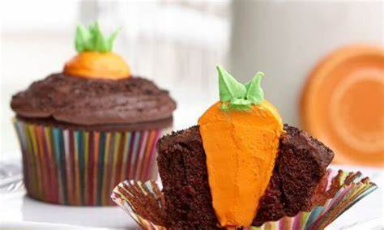

O que são cupcakes?
Os cupcakes são pequenos bolos individuais, geralmente cobertos com glacê e decorados com confeitos. Eles são populares em festas de aniversário, casamentos e outras celebrações.
Tem uma variedade de sabores, como chocolate, baunilha, cenoura e red velvet. Eles também podem ser recheados com cremes, frutas ou outros ingredientes.
Além de serem deliciosos, os cupcakes são fáceis de fazer e podem ser personalizados de acordo com o tema da festa. Eles são uma ótima opção para quem quer surpreender os convidados com um doce especial.

Se você está procurando por receitas de cupcakes, confira nossa seção de receitas abaixo. Temos opções para todos os gostos e níveis de habilidade na cozinha.